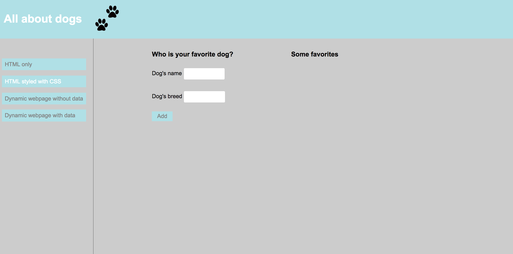
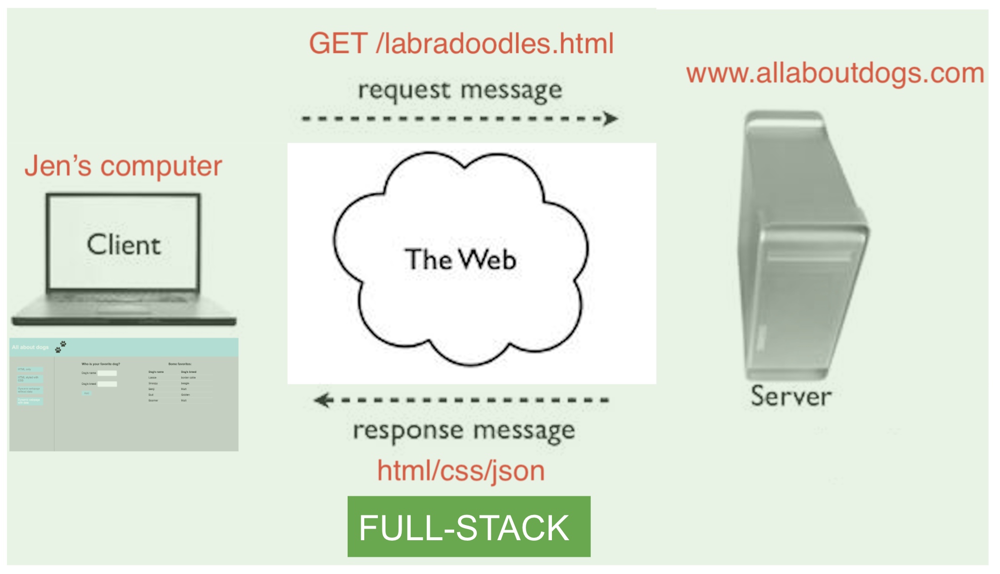

Tech101: What is the Web?
Jen's story
Jen would like to get some information about dogs.

What's happening?


What is the web?
The client side
HTTP
(Hypertext Transfer Protocol)
- How computers communicate over the web
- Made of requests (from the client) and responses (from the server)
HTTP Requests
- Contain a verb like GET, POST, DELETE
- A host, like: www.allaboutdogs.com
- A path on the server, like: /labradoodles.html
GET /labradoodles.html HTTP/1.1
Host: www.allaboutdogs.com
"Tell www.allaboutdogs.com to GET the information at the path /labradoodles.html and return it"
The server side

HTTP Responses
contain...
- Response code like
- 200 (everything's OK)
- 404 (can't find requested information)
- headers with extra information about the response
- Content like HTML, CSS, and JSON

Back to the client side

What is in the content of the response?
How does it turn into the webpage Jen sees?
|
|
HTML

All about dogs

HTML
- Hypertext Markup Language
- Makes static webpages
- Use HTML to specify the content of your webpage (text, images)
- HTML elements are the building blocks of the static page you see
- These elements are represented by <tags/>
- These tags are read by a browser and translated to a visible page
- HTML elements can be modified with attributes
Exercise
- Go to All About Dogs
- Open the inspector
- Change the text of 'All About Dogs'
- Change the HTML tag to make your new heading smaller
- Change the image of the paw prints to another icon
- You'll probably need to change the size of the image. How do you do that?
CSS
header, footer {
padding: 1em;
color: white;
background-color: powderblue;
clear: left;
text-align: left;
}
CSS
- Cascading Style Sheets
- Makes static webpages
- Use to specify the styling of your webpage (color, layout, etc)
- You can use the same style across multiple webpages with one stylesheet
- Saves work since avoids having to use HTML tags or inline attributes
Exercise
- Go to All About Dogs
- Open the inspector
- Change the header background color
- Change the header text color
- Try to submit your favorite dog using the form. What happens?
Learn more!
Come to our HTML/CSS and Advanced CSS series

Javascript

document.getElementById("dog-form").addEventListener("submit", function(event){
event.preventDefault();
var name = document.getElementById("name-input").value;
var breed = document.getElementById("breed-input").value;
addDog(name, breed);
});
Javascript
- Invented specifically to be used on webpages
- Makes webpages dynamic and interactive
- *Not* the same as Java, which is a backend language
- Often used with other libraries and frameworks like jQuery and React
Exercise
- Go to All About Dogs
- Try to submit your favorite dog using the form. What happens?
- Open the inspector
- Find the addDog function in the script tag. What do you think it's doing?
- Paste the function addDog(name, breed); into the console, replacing name and breed with your own parameters. What happens?
- Refresh the page. Does the data persist?
Learn more!
Come to JS 101 and our Advanced JS series

JSON

[
{"id":38,"name":"Lassie","breed":"border collie"},
{"id":39,"name":"Snoopy","breed":"beagle"},
{"id":40,"name":"Benji","breed":"Mutt"},
{"id":41,"name":"Bud","breed":"Golden"},
{"id":42,"name":"Boomer","breed":"Mutt"}
]
JSON
- JavaScript Object Notation
- A syntax for storing data, written in a Javascript Object format
- Can be used to store and exchange data with any language, not just Javascript
- Not the only way to bring data into the browser (ex. XML and pre-rendered HTML)
Exercise
- Go to All About Dogs
- Open the inspector
- Find the data that you see in the table. What format is it in? (hint: check a few slides back)
- Enter your name and favorite breed into the form and submit
- Refresh the page. Does the data persist?
- Look at the data again in the inspector. Is your entry in there?
- Look over at your neighbor's screen. Do you see your entries on their page? What does this tell you?
How do we store and get the data back?
The server gets a request for data, looks it up in the database, and sends it back in the response
The database

Many databases can be used on a server: MySQL, PostgreSQL, Oracle, MongoDB, Redis, etc.
The server side
Use any server-side programming language to respond to requests and store data.
dog_params = params.require(:dog).permit(:name, :breed)
Dog.new(dog_params).save
Many other languages can be used on the server: Ruby, Java, Scala, C++, Go, PHP, JavaScript, etc.
Learn more!
Come to our API workshop
Careers
Who codes these web pages?
Front-end developers

Write client-side code to...
- create and design webpages using HTML and CSS
- give websites functionality using Javascript and front-end frameworks
- send requests to servers and handle their responses
Back-end developers

Write server-side code to...
- receive requests from clients and send back requests
- connect to a database to look up requested data using Postgres or other databases
- handle other logic and run algorithms using Python or other back-end languages
Full-stack developers
Write server-side
and
client-side code!
Day in the life
Planning, thinking, drawing, debugging

How do you become a web developer?
- Earn (optional) – Certification, Bootcamp, Degree
- Learn
- Build
- Be curious
- Network
Learn more!
Come to our event on Nontraditional Paths to Tech

Meet the web team
- Content & Marketing – Copywriters, SEO Strategists, Content Strategists
- Design – UX Designers, Web Designers, Graphics Designers
- Management & QA – Project Manager, Product Manager, Producer, QA Engineers
- Development – Front End Developers, Back End Developers, Server Admins, Database Admins
Learn more!
Come to our event on Hybrid Roles in Tech